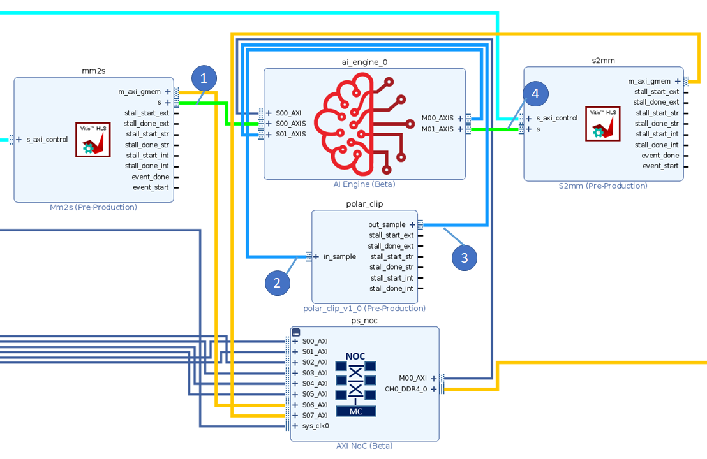
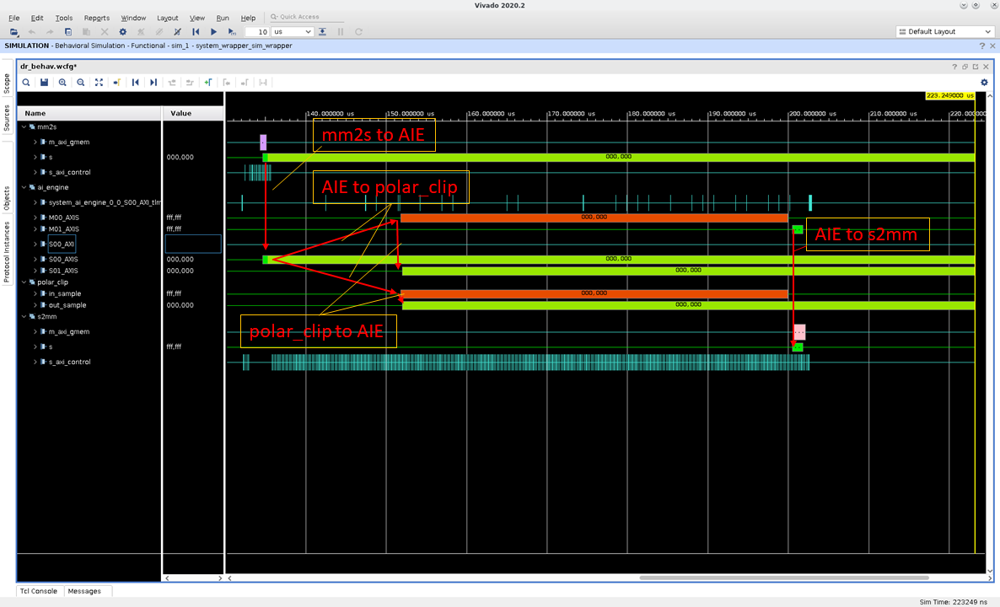

Version: Vitis 2021.2
This tutorial demonstrates the following two features of the Vitis™ unified software platform flow:
Ability to create a custom platform to meet your needs.
Ability to reuse any AXI-based IP you have created as an RTL IP.
The ability to control your platform, and convert your RTL IP to an RTL kernel allows for a more streamlined process for creating the design you need.
Prior to starting this tutorial read and execute the platform creation tutorial https://github.com/Xilinx/Vitis-Tutorials/tree/master/Vitis_Platform_Creation/Introduction/03_Edge_VCK190.
In this tutorial you will learn:
How to create an RTL kernel (outside the ADF graph) to be used with the ADF graph.
How to modify the ADF graph code to incorporate the RTL kernel as a PLIO kernel.
How to build and emulate the design with a custom platform.
After creating the custom platform from the previous tutorial, the next step is to package your RTL code as a Vivado IP and generate a Vitis RTL kernel.
Open the polar_clip_rtl_kernel.tcl file.
This Tcl script creates an IP following the Vivado IP Packaging flow as described in the Creating and Packaging Custom IP User Guide (UG1118).
Note the following points:
The script creates a Vivado Design Suite project; this is required to create any IP because all source and constraint files need to be local to the IP.
Lines 40 and 41 are used to associate the correct clock pins to the interfaces. This is required for the Vitis compiler which links those interfaces to the platform clocking.
ipx::associate_bus_interfaces -busif in_sample -clock ap_clk [ipx::current_core]
ipx::associate_bus_interfaces -busif out_sample -clock ap_clk [ipx::current_core]
On lines 44 and 45 the FREQ_HZ bus parameter is removed. This parameter is used in IP integrator, and is to make sure the associated clock of the interface is used correctly. However, the Vitis compiler sets this during the compilation process, and having it set in the IP will cause the compiler to incorrectly link the clocks.
ipx::remove_bus_parameter FREQ_HZ [ipx::get_bus_interfaces in_sample -of_objects [ipx::current_core]]
ipx::remove_bus_parameter FREQ_HZ [ipx::get_bus_interfaces out_sample -of_objects [ipx::current_core]]
At the end of the script there is the package_xo command. This command analyzes the IP that was created to make sure proper AXI interfaces are used and other rule checks are followed. It then creates the XO file in the same location as the IP repository. A key function used in this command is the -output_kernel_xml. The kernel.xml file is key to the RTL kernel as it describes to the Vitis tool how the kernel should be controlled. You can find more information on RTL kernels and their requirements here.
package_xo -kernel_name $kernelName \
-ctrl_protocol ap_ctrl_none \
-ip_directory [pwd]/ip_repo/$kernelName \
-xo_path [pwd]/ip_repo/${kernelName}.xo \
-force -output_kernel_xml [pwd]/ip_repo/kernel_${kernelName}_auto.xml
To complete this step run the following command:
vivado -source polar_clip_rtl_kernel.tcl -mode batch
or
make polar_clip.xo
To set up the ADF graph to interface with the polar_clip RTL kernel, you must add other connections to PLIOs that represent the RTL kernel.
The following graph.cpp shows how to connect to the RTL kernel.
#include "graph.h"
PLIO *in0 = new PLIO("DataIn1", adf::plio_32_bits,"data/input.txt");
// RTL Kernel PLIO
PLIO *ai_to_pl = new PLIO("clip_in",adf::plio_32_bits, "data/output.txt");
PLIO *pl_to_ai = new PLIO("clip_out", adf::plio_32_bits,"data/input2.txt");
PLIO *out0 = new PLIO("DataOut1",adf::plio_32_bits, "data/output.txt");
// RTL Kernel Addition to the platform
simulation::platform<2,2> platform(in0, pl_to_ai, out0, ai_to_pl);
clipped clipgraph;
connect<> net0(platform.src[0], clipgraph.in);
// Additional nets to the RTL Kernel
connect<> net1(clipgraph.clip_in,platform.sink[0]);
connect<> net2(platform.src[1],clipgraph.clip_out);
connect<> net3(clipgraph.out, platform.sink[1]);
#ifdef __AIESIM__
int main(int argc, char ** argv) {
clipgraph.init();
clipgraph.run(4);
clipgraph.end();
return 0;
}
#endif
Note the following:
Two additional PLIO objects ai_to_pl and pl_to_ai are added. These are to hook up to the polar_clip RTL kernel.
The simulation::platform object now has the two extra PLIO interfaces.
There are additional net objects to hook up the RTL kernel to the rest of the platform object.
For more information on RTL kernels in the AI Engine see: Design Flow Using RTL Programmable Logic.
Compile the graph using the following command:
aiecompiler --target=hw -include="$XILINX_VITIS/aietools/include" -include="./aie" -include="./data" -include="./aie/kernels" -include="./" -workdir=./Work aie/graph.cpp
or
make aie
Similar to the polar_clip kernel, the mm2s and s2mm kernels are not part of the ADF graph. Unlike the polar_clip (RTL kernel), these are HLS-based kernels and use the Vitis compiler to compile them into XO files. Remember that instead of targeting a Xilinx provided platform, you are targeting the custom platform created in the previous tutorial.
To build these kernels run the following commands:
v++ -c --platform ../../../Versal_Platform_Creation/Tutorial-VCK190_Custom/ref_files/step3_pfm/platform_repo/vck190_custom/export/vck190_custom/vck190_custom.xpfm -g --save-temps -k mm2s pl_kernels/mm2s.cpp -o mm2s.xo
v++ -c --platform ../../../Versal_Platform_Creation/Tutorial-VCK190_Custom/ref_files/step3_pfm/platform_repo/vck190_custom/export/vck190_custom/vck190_custom.xpfm -g --save-temps -k mm2s pl_kernels/s2mm.cpp -o s2mm.xo
or
make kernels
Because there is no HLS kernel in the ADF graph, the system.cfg file, which is used to determine connectivity, needs to reflect the new AI Engine interfacing.
Open the system.cfg file and the sc options and note that there are two lines specific to the polar_clip kernel. Note that the name of the interfaces are the same as defined previously in the code snippet for the graph.h file where the first parameter of the PLIO object is instantiated.
[connectivity]
sc=mm2s_1.s:ai_engine_0.DataIn1
sc=ai_engine_0.clip_in:polar_clip_1.in_sample
sc=polar_clip_1.out_sample:ai_engine_0.clip_out
sc=ai_engine_0.DataOut1:s2mm_1.s
Close system.cfg.
Build the emulation design using the following command:
v++ -l --platform ../../../Versal_Platform_Creation/Tutorial-VCK190_Custom/ref_files/step3_pfm/platform_repo/vck190_custom/export/vck190_custom/vck190_custom.xpfm s2mm.xo mm2s.xo polar_clip.xo libadf.a -t hw_emu --save-temps -g --config system.cfg -o tutorial.xclbin
or
make xclbin
Building the host application follows a similar procedure, regardless of whether it is targeting a base platform or custom platform. Make sure to use the appropriate SYSROOT path for the design. Also make sure to adjust the path based upon where you cloned the repositories.
Build the host application:
aarch64-linux-gnu-g++ -Wall -c -std=c++14 -Wno-int-to-pointer-cast \
--sysroot=../../../Versal_Platform_Creation/Tutorial-VCK190_Custom/ref_files/step2_petalinux/build/petalinux/images/linux/sdk/sysroots/aarch64-xilinx-linux \
-I../../../Versal_Platform_Creation/Tutorial-VCK190_Custom/ref_files/step2_petalinux/build/petalinux/images/linux/sdk/sysroots/aarch64-xilinx-linux/usr/include/xrt \
-I../../../Versal_Platform_Creation/Tutorial-VCK190_Custom/ref_files/step2_petalinux/build/petalinux/images/linux/sdk/sysroots/aarch64-xilinx-linux/usr/include \
-I./ -I../aie -I$XILINX_VITIS/aietools/include -I$XILINX_VITIS/include \
-o aie_control_xrt.o ../Work/ps/c_rts/aie_control_xrt.cpp
aarch64-linux-gnu-g++ -Wall -c -std=c++14 -Wno-int-to-pointer-cast \
--sysroot=../../../Versal_Platform_Creation/Tutorial-VCK190_Custom/ref_files/step2_petalinux/build/petalinux/images/linux/sdk/sysroots/aarch64-xilinx-linux \
-I../../../Versal_Platform_Creation/Tutorial-VCK190_Custom/ref_files/step2_petalinux/build/petalinux/images/linux/sdk/sysroots/aarch64-xilinx-linux/usr/include/xrt \
-I../../../Versal_Platform_Creation/Tutorial-VCK190_Custom/ref_files/step2_petalinux/build/petalinux/images/linux/sdk/sysroots/aarch64-xilinx-linux/usr/include \
-I./ -I../aie -I$XILINX_VITIS/aietools/include -I$XILINX_VITIS/include \
-o host.o host.cpp
aarch64-linux-gnu-g++ *.o -ladf_api_xrt -lxrt_coreutil \
-L../../../Versal_Platform_Creation/Tutorial-VCK190_Custom/ref_files/step2_petalinux/build/petalinux/images/linux/sdk/sysroots/aarch64-xilinx-linux/usr/lib \
--sysroot=../../../Versal_Platform_Creation/Tutorial-VCK190_Custom/ref_files/step2_petalinux/build/petalinux/images/linux/sdk/sysroots/aarch64-xilinx-linux \
-L$XILINX_VITIS/aietools/lib/aarch64.o -std=c++14 -o host.exe
or
make host
When packaging the design, make sure that the rootfs, kernel_image, and platform all point to the custom platform with the custom Linux build. If any of these items are not correct, packaging can throw an error, or, if it does package, then the emulation will malfunction.
To package the design run:
cd ./sw
v++ -p -t hw_emu \
-f ../../../Versal_Platform_Creation/Tutorial-VCK190_Custom/ref_files/step3_pfm/platform_repo/vck190_custom/export/vck190_custom/vck190_custom.xpfm \
--package.rootfs=../../../../Versal_Platform_Creation/Tutorial-VCK190_Custom/ref_files/step2_petalinux/build/petalinux/images/linux/rootfs.ext4 \
--package.image_format=ext4 \
--package.boot_mode=sd \
--package.kernel_image=../../../../Versal_Platform_Creation/Tutorial-VCK190_Custom/ref_files/step2_petalinux/build/petalinux/images/linux/Image \
--package.defer_aie_run \
--package.sd_file host.exe ../tutorial.xclbin ../libadf.a
cd ..
or
make package
After packaging, everything is ready to run emulation or to run on hardware.
To run emulation use the following command:
make run_emu
or
cd ./sw
./launch_hw_emu.sh
cd ..
When launched, use the Linux prompt to run the design.
Execute the following command when the emulated Linux prompt displays:
cd /mnt/sd-mmcblk0p1
export XILINX_XRT=/usr
This sets up the design to run emulation. Run the design using the following command:
./host.exe a.xclbin
You should see an output displaying TEST PASSED. When this is shown, run the keyboard command: Ctrl+A x to end the QEMU instance.
The following image shows a debug waveform to show the data movement through the system. The general flow of data is as follows:
Data goes from DDR memory to the AI Engine through the mm2s kernel.
The ADF graph processes the data and sends data to the polar_clip kernel.
The polar_clip kernel processes data and sends it back to the ADF graph.
The AI Engine sends the resulting graph output to the s2mm kernel to store in DDR memory.


Launch the emulation from the sw directory with ./launch_hw_emu.sh -g command. The -g option tells the script to launch the Vivado Simulator (xsim) Waveform GUI as shown in the preceding image.
When the GUI opens up, add waveforms to the waveform viewer or you can use the existing .wcfg file in the repo by selecting File > Simulation Waveform > Open Configuration, locate the custom.wcfg, and click OK.
Click Run > Run All or F3.
This tutorial shows how to:
Create a custom RTL kernel from a Vivado IP.
Modify the ADF graph to handle more PLIO interfacing.
Build and execute the design in emulation.
Licensed under the Apache License, Version 2.0 (the “License”); you may not use this file except in compliance with the License.
You may obtain a copy of the License at
http://www.apache.org/licenses/LICENSE-2.0
Unless required by applicable law or agreed to in writing, software distributed under the License is distributed on an “AS IS” BASIS, WITHOUT WARRANTIES OR CONDITIONS OF ANY KIND, either express or implied. See the License for the specific language governing permissions and limitations under the License.
Copyright© 2020–2021 Xilinx
XD012